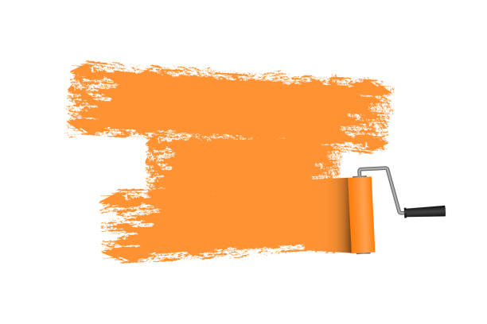

Malerei Schallala
Meine Leidenschaft ist zugleich auch mein Hobbie
Qualitätsbewusstes Arbeiten, professionelle Beratung und eine breite Palette an hochwertigen Produkten sind die Eckpfeiler meiner Dienstleistungen

Ich wähle stets Produkte aus, die ich voll und ganz unterstützen kann. Mir ist es ein Anliegen, dass die Farben, die ich verwende, sich harmonisch in die jeweiligen Räume und Gegebenheiten einfügen. Zudem lege ich großen Wert darauf, die individuellen Wünsche meiner Kunden und Kundinnen zu berücksichtigen und sie mit meinem besten Wissen und Gewissen zu beraten.
Selbständige Malerin seit Abschluss meiner Lehre vor über 20 Jahren, lebe ich meine Leidenschaft weiterhin für diesen Beruf, der mir stets neue Entdeckungen ermöglicht und von meinen vielfältigen Erfahrungen profitieren lässt. Im Laufe der Zeit habe ich mich kontinuierlich weitergebildet, wobei meine neueste Qualifikation in Valpaint liegt. Diese ermöglicht es mir, aus den gewohnten Strukturen auszubrechen und meine kreative Seite auszuleben.

Hier habe ich nach der Arbeit ein verdientes Bier bekommen, Decke verklebt mit Isolationsmatten, ein Netz übergezogen, anschliessend Verputzt, und zu guter letzt meinen eigentlichen Job gemacht und das ganze noch in einem schönen warmen Weiss gestrichen